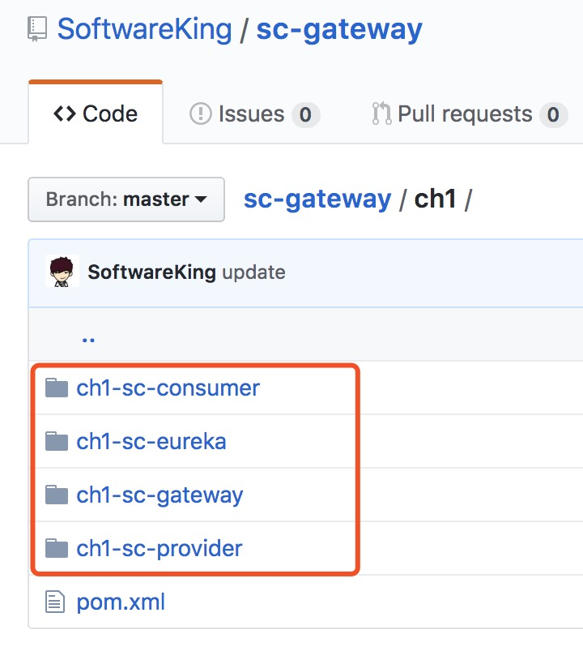
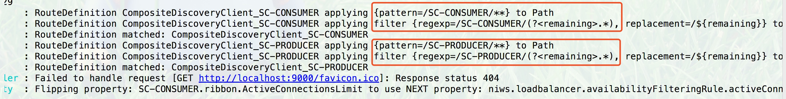
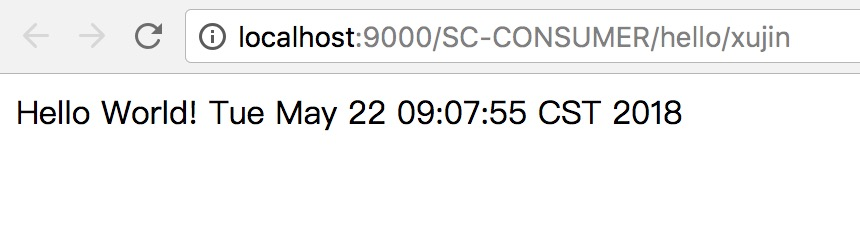
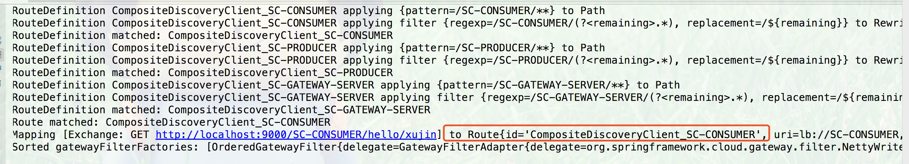

摘要:本篇文章主要介绍了Spring Cloud Gateway的基于服务发现的默认路由规则，从中可以看出Gateway的路由规则:http://Gateway_HOST:Gateway_PORT/大写的serviceId/* 和 zuul的默认路由规则http://ZUUL_HOST:ZUUL_PORT/微服务在Eureka上的serviceId/*差不多。
1.Spring Gateway概述
1.1 什么是Spring Cloud Gateway
Spring Cloud Gateway是Spring官方基于Spring 5.0，Spring Boot 2.0和Project Reactor等技术开发的网关，Spring Cloud Gateway旨在为微服务架构提供一种简单而有效的统一的API路由管理方式。Spring Cloud Gateway作为Spring Cloud生态系中的网关，目标是替代Netflix ZUUL，其不仅提供统一的路由方式，并且基于Filter链的方式提供了网关基本的功能，例如：安全，监控/埋点，和限流等。

1.2 Spring Cloud Gateway的功能
Spring Cloud Gateway 的特征： * 基于 Spring Framework 5，Project Reactor 和 Spring Boot 2.0 动态路由 * Predicates 和 Filters 作用于特定路由 * 集成 Hystrix 断路器 * 集成 Spring Cloud DiscoveryClient * 易于编写的 Predicates 和 Filters * 限流 * 路径重写
2. Spring Cloud Gateway的工程流程

客户端向 Spring Cloud Gateway 发出请求。然后在 Gateway Handler Mapping 中找到与请求相匹配的路由，将其发送到 Gateway Web Handler。Handler 再通过指定的过滤器链来将请求发送到我们实际的服务执行业务逻辑，然后返回。 过滤器之间用虚线分开是因为过滤器可能会在发送代理请求之前（“pre”）或之后（“post”）执行业务逻辑。
2.1 Pre和POST两种类型的过滤器
3.基于服务发现的默认路由规则
3.1 zuul和gateway的默认路由规则
3.1.1 zuul的默认路由规则
说明默认情况下，Zuul会代理所有注册到Eureka Server的微服务，并且Zuul的路由规则如下： http://ZUUL_HOST:ZUUL_PORT/微服务在Eureka上的serviceId/** 会被转发到serviceId对应的微服务。 http://localhost:8040/sc-zuul-first-provider/sc/order/2
3.1.2 gateway的默认路由规则
下面的案例中会演示：http://localhost:9000/SC-CONSUMER/hello/xujin >http://Gateway_HOST:Gateway_PORT/大写的serviceId/**，其中微服务应用名默认大写访问。
3.2 案例示例代码
https://github.com/SoftwareKing/sc-gateway/tree/master/ch1

| 模块 | 说明 | 端口 |
|---|---|---|
| ch1-sc-consumer | 服务消费者 | 8000 |
| ch1-sc-eureka | Eureka Server注册中心 | 8761 |
| ch1-sc-gateway | Spring Cloud Gateway Sever | 9000 |
| ch1-sc-provider | 服务提供者 | 8001 |
3.2.1 ch1-sc-gateway工程说明
3.2.1.1 Maven依赖
Spring Cloud Gateway sever主要的maven依赖如下所示
<dependencies>
<dependency>
<groupId>org.springframework.cloud</groupId>
<artifactId>spring-cloud-starter-gateway</artifactId>
</dependency>
<dependency>
<groupId>org.springframework.cloud</groupId>
<artifactId>spring-cloud-starter-netflix-eureka-client</artifactId>
</dependency>
</dependencies>
3.2.1.2 yml文件配置
spring:
application:
name: sc-gateway-server
cloud:
gateway:
discovery:
locator:
enabled: true
server:
port: 9000
eureka:
client:
service-url:
defaultZone: http://localhost:8761/eureka/
logging:
level:
org.springframework.cloud.gateway: debug
配置说明：
spring.cloud.gateway.discovery.locator.enabled：是否与服务发现组件进行结合，通过 serviceId 转发到具体的服务实例。默认为false，设为true便开启通过服务中心的自动根据 serviceId 创建路由的功能。
修改spring cloud gateway server监听的端口为9000
eureka.client.service-url.defaultZone: http://localhost:8761/eureka/,指定注册中心的地址，Spring Cloud Gateway从注册中心获取已经注册的服务列表。
logging.level.org.springframework.cloud.gateway: debug,开启spring-Cloud-gateway的日志级别为debug，方便debug调试。
3.3 启动测试
3.3.1 错误的路由规则访问
访问Spring Cloud Gateway对应的server，当访问http://localhost:9000/sc-consumer/hello/xujin的时候，报错如下所示，正确的Spring Cloud Gateway的默认路由规则:http://Gateway_HOST:Gateway_PORT/大写的serviceId/**

2018-05-18 01:10:49.742 DEBUG 6462 --- [ctor-http-nio-5] o.s.c.g.r.RouteDefinitionRouteLocator : RouteDefinition CompositeDiscoveryClient_SC-CONSUMER applying {pattern=/SC-CONSUMER/**} to Path
2018-05-18 01:10:49.743 DEBUG 6462 --- [ctor-http-nio-5] o.s.c.g.r.RouteDefinitionRouteLocator : RouteDefinition CompositeDiscoveryClient_SC-CONSUMER applying filter {regexp=/SC-CONSUMER/(?<remaining>.*), replacement=/${remaining}} to RewritePath
2018-05-18 01:10:49.743 DEBUG 6462 --- [ctor-http-nio-5] o.s.c.g.r.RouteDefinitionRouteLocator : RouteDefinition matched: CompositeDiscoveryClient_SC-CONSUMER
2018-05-18 01:10:49.744 DEBUG 6462 --- [ctor-http-nio-5] o.s.c.g.r.RouteDefinitionRouteLocator : RouteDefinition CompositeDiscoveryClient_SC-PRODUCER applying {pattern=/SC-PRODUCER/**} to Path
2018-05-18 01:10:49.744 DEBUG 6462 --- [ctor-http-nio-5] o.s.c.g.r.RouteDefinitionRouteLocator : RouteDefinition CompositeDiscoveryClient_SC-PRODUCER applying filter {regexp=/SC-PRODUCER/(?<remaining>.*), replacement=/${remaining}} to RewritePath
2018-05-18 01:10:49.745 DEBUG 6462 --- [ctor-http-nio-5] o.s.c.g.r.RouteDefinitionRouteLocator : RouteDefinition matched: CompositeDiscoveryClient_SC-PRODUCER
2018-05-18 01:10:49.745 DEBUG 6462 --- [ctor-http-nio-5] o.s.c.g.r.RouteDefinitionRouteLocator : RouteDefinition CompositeDiscoveryClient_SC-GATEWAY-SERVER applying {pattern=/SC-GATEWAY-SERVER/**} to Path
2018-05-18 01:10:49.747 DEBUG 6462 --- [ctor-http-nio-5] o.s.c.g.r.RouteDefinitionRouteLocator : RouteDefinition CompositeDiscoveryClient_SC-GATEWAY-SERVER applying filter {regexp=/SC-GATEWAY-SERVER/(?<remaining>.*), replacement=/${remaining}} to RewritePath
2018-05-18 01:10:49.748 DEBUG 6462 --- [ctor-http-nio-5] o.s.c.g.r.RouteDefinitionRouteLocator : RouteDefinition matched: CompositeDiscoveryClient_SC-GATEWAY-SERVER
2018-05-18 01:10:49.748 DEBUG 6462 --- [ctor-http-nio-5] o.s.c.g.h.RoutePredicateHandlerMapping : Route matched: CompositeDiscoveryClient_SC-CONSUMER
2018-05-18 01:10:49.749 DEBUG 6462 --- [ctor-http-nio-5] o.s.c.g.h.RoutePredicateHandlerMapping : Mapping [Exchange: GET http://localhost:9000/SC-CONSUMER/hello/xujin] to Route{id='CompositeDiscoveryClient_SC-CONSUMER', uri=lb://SC-CONSUMER, order=0, predicate=org.springframework.cloud.gateway.handler.predicate.PathRoutePredicateFactory$$Lambda$707/751096818@7f4c6373, gatewayFilters=[OrderedGatewayFilter{delegate=org.springframework.cloud.gateway.filter.factory.RewritePathGatewayFilterFactory$$Lambda$709/672603106@293895d2, order=1}]}
2018-05-18 01:10:49.749 DEBUG 6462 --- [ctor-http-nio-5] o.s.c.g.handler.FilteringWebHandler : Sorted gatewayFilterFactories: [OrderedGatewayFilter{delegate=GatewayFilterAdapter{delegate=org.springframework.cloud.gateway.filter.NettyWriteResponseFilter@5e85c21b}, order=-1}, OrderedGatewayFilter{delegate=org.springframework.cloud.gateway.filter.factory.RewritePathGatewayFilterFactory$$Lambda$709/672603106@293895d2, order=1}, OrderedGatewayFilter{delegate=GatewayFilterAdapter{delegate=org.springframework.cloud.gateway.filter.RouteToRequestUrlFilter@38e83838}, order=10000}, OrderedGatewayFilter{delegate=GatewayFilterAdapter{delegate=org.springframework.cloud.gateway.filter.LoadBalancerClientFilter@6ef2f7ad}, order=10100}, OrderedGatewayFilter{delegate=GatewayFilterAdapter{delegate=org.springframework.cloud.gateway.filter.AdaptCachedBodyGlobalFilter@41def031}, order=2147483637}, OrderedGatewayFilter{delegate=GatewayFilterAdapter{delegate=org.springframework.cloud.gateway.filter.WebsocketRoutingFilter@4966bab1}, order=2147483646}, OrderedGatewayFilter{delegate=GatewayFilterAdapter{delegate=org.springframework.cloud.gateway.filter.NettyRoutingFilter@22d477c2}, order=2147483647}, OrderedGatewayFilter{delegate=GatewayFilterAdapter{delegate=org.springframework.cloud.gateway.filter.ForwardRoutingFilter@39832280}, order=2147483647}]
从上面的log，看到返回了 404 错误，进一步可以看到 Spring Cloud Gateway 已经为我们的 provider 和 consumer 自动创建了对应的路由转发规则，但是这里的 pattern/regexp 里都是大写的，下面换成大写的测试一下。
3.3.2 Gateway正确的路由规则测试
访问正确的http://localhost:9000/SC-CONSUMER/hello/xujin，可以成功访问。


2018-05-22 09:04:21.204 DEBUG 1677 --- [ctor-http-nio-2] o.s.c.g.r.RouteDefinitionRouteLocator : RouteDefinition CompositeDiscoveryClient_SC-CONSUMER applying {pattern=/SC-CONSUMER/**} to Path
2018-05-22 09:04:21.205 DEBUG 1677 --- [ctor-http-nio-2] o.s.c.g.r.RouteDefinitionRouteLocator : RouteDefinition CompositeDiscoveryClient_SC-CONSUMER applying filter {regexp=/SC-CONSUMER/(?<remaining>.*), replacement=/${remaining}} to RewritePath
2018-05-22 09:04:21.205 DEBUG 1677 --- [ctor-http-nio-2] o.s.c.g.r.RouteDefinitionRouteLocator : RouteDefinition matched: CompositeDiscoveryClient_SC-CONSUMER
2018-05-22 09:04:21.206 DEBUG 1677 --- [ctor-http-nio-2] o.s.c.g.r.RouteDefinitionRouteLocator : RouteDefinition CompositeDiscoveryClient_SC-PRODUCER applying {pattern=/SC-PRODUCER/**} to Path
2018-05-22 09:04:21.207 DEBUG 1677 --- [ctor-http-nio-2] o.s.c.g.r.RouteDefinitionRouteLocator : RouteDefinition CompositeDiscoveryClient_SC-PRODUCER applying filter {regexp=/SC-PRODUCER/(?<remaining>.*), replacement=/${remaining}} to RewritePath
2018-05-22 09:04:21.207 DEBUG 1677 --- [ctor-http-nio-2] o.s.c.g.r.RouteDefinitionRouteLocator : RouteDefinition matched: CompositeDiscoveryClient_SC-PRODUCER
2018-05-22 09:04:21.208 DEBUG 1677 --- [ctor-http-nio-2] o.s.c.g.r.RouteDefinitionRouteLocator : RouteDefinition CompositeDiscoveryClient_SC-GATEWAY-SERVER applying {pattern=/SC-GATEWAY-SERVER/**} to Path
2018-05-22 09:04:21.208 DEBUG 1677 --- [ctor-http-nio-2] o.s.c.g.r.RouteDefinitionRouteLocator : RouteDefinition CompositeDiscoveryClient_SC-GATEWAY-SERVER applying filter {regexp=/SC-GATEWAY-SERVER/(?<remaining>.*), replacement=/${remaining}} to RewritePath
2018-05-22 09:04:21.209 DEBUG 1677 --- [ctor-http-nio-2] o.s.c.g.r.RouteDefinitionRouteLocator : RouteDefinition matched: CompositeDiscoveryClient_SC-GATEWAY-SERVER
2018-05-22 09:04:21.209 DEBUG 1677 --- [ctor-http-nio-2] o.s.c.g.h.RoutePredicateHandlerMapping : Route matched: CompositeDiscoveryClient_SC-CONSUMER
2018-05-22 09:04:21.209 DEBUG 1677 --- [ctor-http-nio-2] o.s.c.g.h.RoutePredicateHandlerMapping : Mapping [Exchange: GET http://localhost:9000/SC-CONSUMER/hello/xujin] to Route{id='CompositeDiscoveryClient_SC-CONSUMER', uri=lb://SC-CONSUMER, order=0, predicate=org.springframework.cloud.gateway.handler.predicate.PathRoutePredicateFactory$$Lambda$706/57023854@24f1a91e, gatewayFilters=[OrderedGatewayFilter{delegate=org.springframework.cloud.gateway.filter.factory.RewritePathGatewayFilterFactory$$Lambda$708/2036079541@cbb7393, order=1}]}
2018-05-22 09:04:21.209 DEBUG 1677 --- [ctor-http-nio-2] o.s.c.g.handler.FilteringWebHandler : Sorted gatewayFilterFactories: [OrderedGatewayFilter{delegate=GatewayFilterAdapter{delegate=org.springframework.cloud.gateway.filter.NettyWriteResponseFilter@29a98d9f}, order=-1}, OrderedGatewayFilter{delegate=org.springframework.cloud.gateway.filter.factory.RewritePathGatewayFilterFactory$$Lambda$708/2036079541@cbb7393, order=1}, OrderedGatewayFilter{delegate=GatewayFilterAdapter{delegate=org.springframework.cloud.gateway.filter.RouteToRequestUrlFilter@544e8149}, order=10000}, OrderedGatewayFilter{delegate=GatewayFilterAdapter{delegate=org.springframework.cloud.gateway.filter.LoadBalancerClientFilter@55d58825}, order=10100}, OrderedGatewayFilter{delegate=GatewayFilterAdapter{delegate=org.springframework.cloud.gateway.filter.AdaptCachedBodyGlobalFilter@2da3b078}, order=2147483637}, OrderedGatewayFilter{delegate=GatewayFilterAdapter{delegate=org.springframework.cloud.gateway.filter.WebsocketRoutingFilter@1a96d94c}, order=2147483646}, OrderedGatewayFilter{delegate=GatewayFilterAdapter{delegate=org.springframework.cloud.gateway.filter.NettyRoutingFilter@19a64eae}, order=2147483647}, OrderedGatewayFilter{delegate=GatewayFilterAdapter{delegate=org.springframework.cloud.gateway.filter.ForwardRoutingFilter@7fb66650}, order=2147483647}]
可以看出，Spring Cloud Gateway 自动的为我们的 consumer 创建了一个路由，类似于下边这样
routes:
- id: CompositeDiscoveryClient_SC-CONSUMER
uri: lb://SC-CONSUMER
order: 0
predicates:
- Path=/SC-CONSUMER/**
filters:
- RewritePath=/SC-CONSUMER/(?<segment>.*), /$\{segment}
所以从zuul迁移到gateway的时候，服务路由规则中的微服务应用Id默认从小写变为大写。